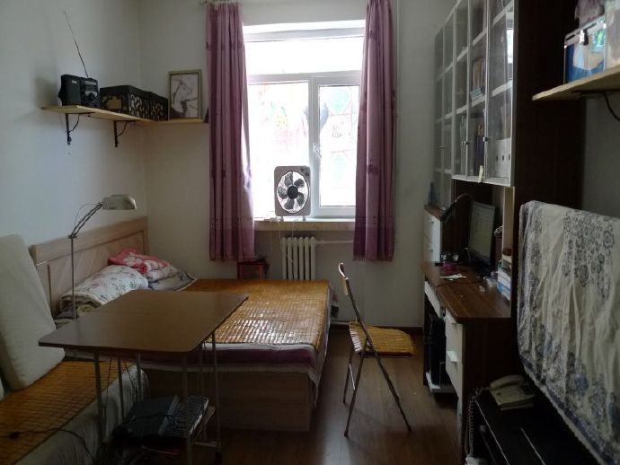
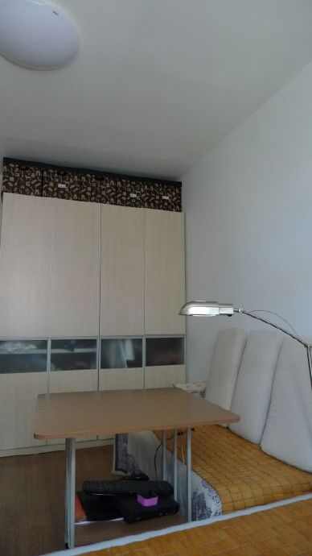
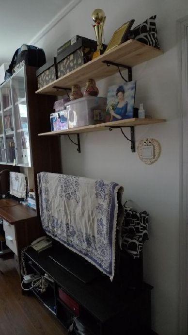
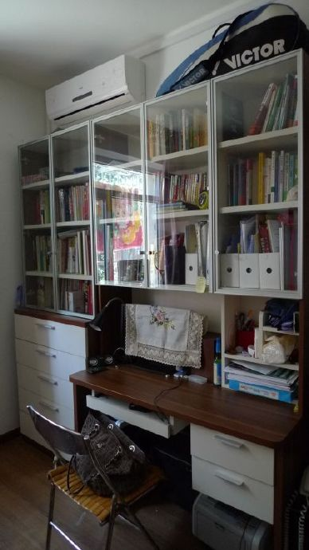
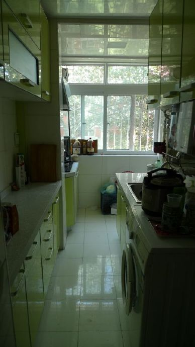
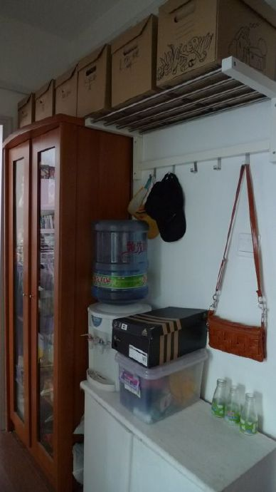
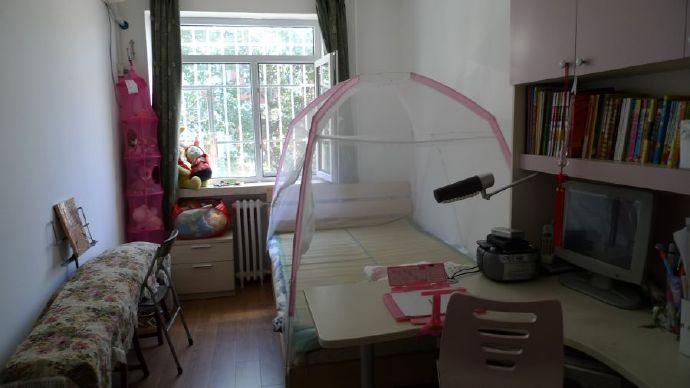

曼曼上学了，摆在我们面前的首要问题就是——搬家。
从140平米的大房子搬到50平米的小房子，简直无法想象自己是怎么把那一大屋子的东西倒腾过来的。虽然不是自己的房子，还是很认真的装修了。历时长久的装修真够折腾人的，春节时我们终于搬进了新家。名副其实的蜗居呀！不过，经我们一装修，小小的蜗居还是满温馨的。

名副其实的多功能间，客厅+卧室+书房+餐厅

大屋的沙发和衣柜，衣柜上是宜家的储物箱，大大小小买了N多

宜家的搁板和电视柜，全是郭嘉同志一个螺钉一个螺钉组装的，搁板也是他固定的，老房子的砖墙，真难搞定。

紧凑的书柜+书桌

厨房，非常窄，两边的柜子都比标准尺寸窄，也只留出60多公分的过道。设计师说做不了两排柜子，而且老房子下水道没法改，洗衣机也只能放厨房里。我绞尽脑汁才设计成这样，不过这些脑细胞还是非常值得的，事实证明厨房非常好用！

留下的两样旧家具，杂物柜和鞋柜，都放在门厅了。衣帽钩和储物箱也是宜家的。

曼曼的儿童房，是她学习、弹古筝、游戏以及招待小朋友的地方。